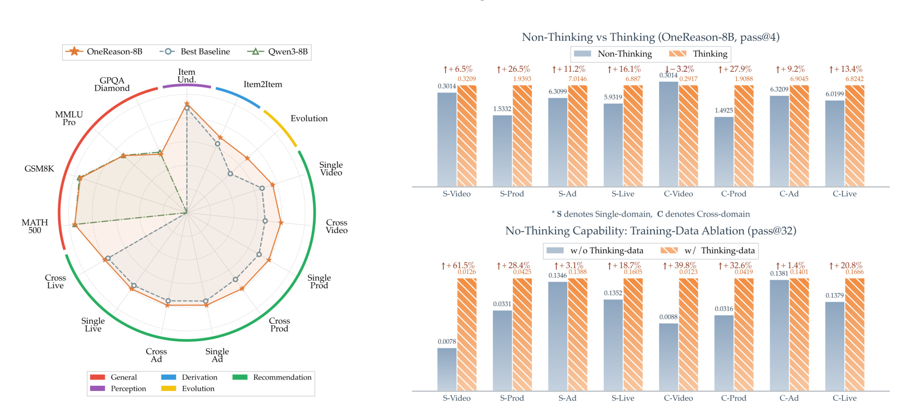
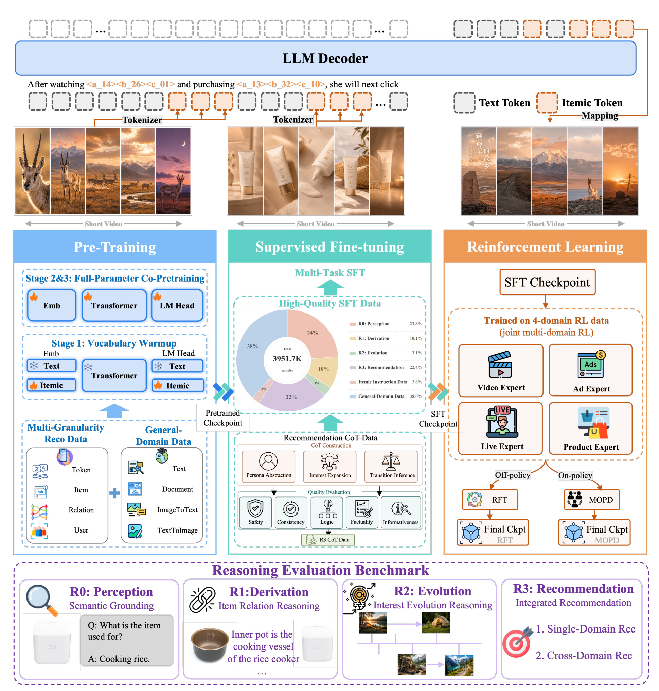
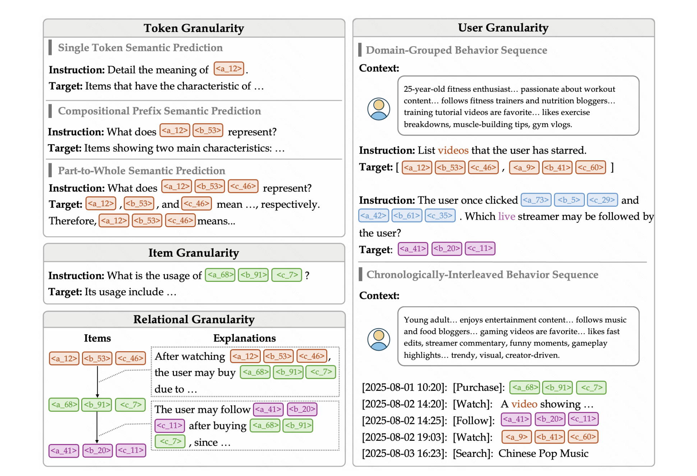
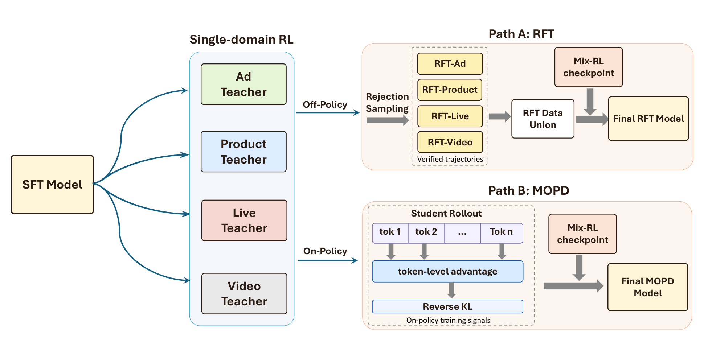
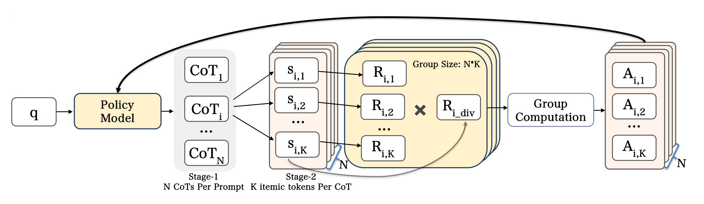
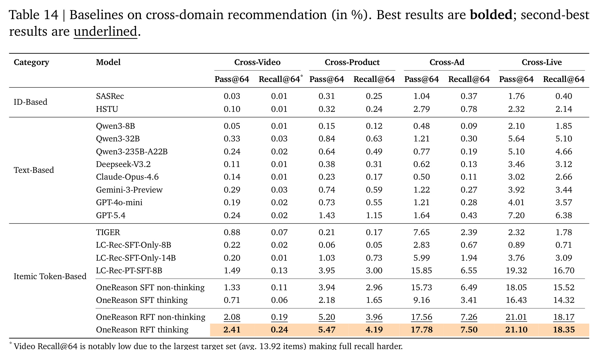
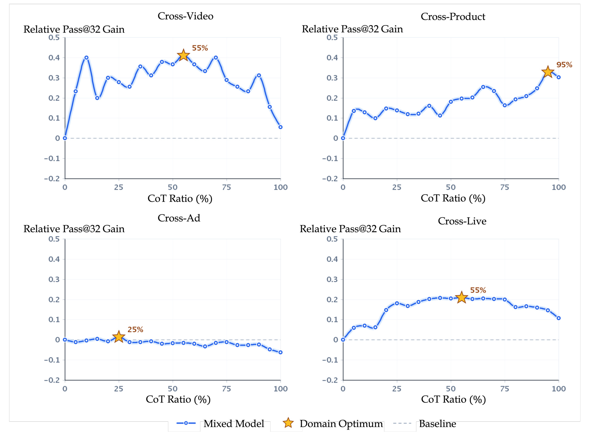
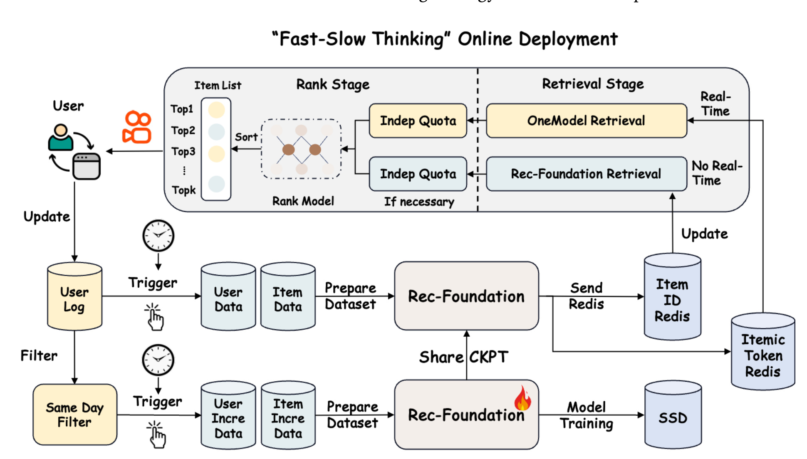

OneReason：让生成式推荐真正进入 thinking mode 的技术报告
快手 OneRec Team 的 OneReason Technical Report 讨论的是生成式推荐模型里一个很容易被忽略的问题：把大语言模型式的“先思考再回答”搬进推荐系统，并不会自动带来收益，低质量 CoT 甚至会干扰最终 itemic token 预测。论文作者来自 Kuaishou / OneRec Team，公开版本为 arXiv v1，代码或项目页本轮未核验到独立入口；论文只说明后续会开源 OneReason-8B 和 OneReason-0.8B。我的阅读重点放在三件事上：它怎样把 itemic token 从离散符号变成可感知对象，怎样把推荐 CoT 拆成可训练的认知流程，以及怎样通过 specialize-then-unify 的 RL 让 thinking mode 最终超过 non-thinking mode。
1. 背景和问题
1.1 论文要解决的问题：推荐里的 thinking 为什么失灵
OneRec 系列的核心设定是把推荐候选表示成 itemic token，让模型像生成文本一样生成下一个可能交互的内容、商品、广告或直播。这个范式的优势是可以吃到规模化训练的收益，也可以把召回、排序和跨域推荐放进统一生成框架里；但它天然遇到一个问题：推荐答案不是自然语言，而是一串离散 itemic tokens。大模型在数学、代码、问答里可以通过自然语言 CoT 分解问题，而生成式推荐如果只在 <think> 里堆一串 itemic tokens，模型既不一定理解这些 token 的语义，也很难形成可解释的兴趣迁移链。
论文最重要的反常观察是：早期 OneRec-Think、OpenOneRec 风格的 thinking mode 并没有稳定超过 non-thinking mode。也就是说，让模型多写一段推理，不代表推理真的帮它提高 ground-truth target 的概率。低质量 CoT 可能把注意力从历史行为拉向泛化过度的文本先验，或者停留在表面类目、热门 IP、近期曝光这些浅层线索上，最后反而降低 itemic token 的命中率。OneReason 的出发点正是把“推荐 CoT 是否有用”从一个格式问题，改写成感知、认知和优化三个层面的能力问题。

Figure 1 是整篇报告的动机图。左侧雷达图强调 OneReason-8B 在 MMLU-Pro、MATH-500、GSM8K 等通用任务上没有明显丢掉 Qwen3-8B 的基础能力；中间柱状图说明它在四个真实业务推荐 benchmark 上超过多类 baseline；右侧最关键，它把 non-thinking 和 thinking 的对比单独拿出来，试图证明“thinking advantage”不是写作风格，而是能落到 Pass@K、Recall@K 这类推荐指标上。这里要注意，论文并不是说 CoT 天然有效，而是说只有经过后面的预训练、SFT 和 RL 设计后，thinking 才从干扰项变成有效证据。因此这张图在正文中承担的是问题定义作用：它先展示目标现象，再逼着读者追问哪些训练环节让右侧的 thinking 优势成立。
1.2 为什么推荐推理比普通 LLM CoT 更难
推荐推理的第一个难点是感知。自然语言 token 自带语义，模型看到“羽毛球拍”“三角洲行动”“宝宝辅食”可以直接利用预训练知识；itemic token 例如 <|video_begin|><a_5028><b_6733><c_2559> 本身没有可读语义。若模型不能把三层 sub-token 和内容、协同关系、用户行为对齐，那么 CoT 里引用这些 token 只是符号搬运，不是推理。论文把这类能力称为 perception，即把 itemic token grounded 到其背后的语言语义和多模态内容。
第二个难点是认知。推荐系统要处理的是用户长期行为、短期 burst、多域交互和目标域转移。一个用户今天看游戏直播，昨天搜装修材料，上周买儿童衣服，这些行为不能简单平均，也不能只取最近一次。有效 CoT 必须把行为压缩成若干潜在兴趣点，再判断哪个兴趣点最可能迁移到目标域。论文把这类能力称为 cognition，即把用户行为序列重组成 coherent latent interest points。
第三个难点是优化。推荐 reward 极稀疏，模型生成的 itemic token 序列只有命中 ground-truth set 才有明确正反馈。直接做混合域 RL 会遇到四个业务域之间的干扰：Video、Product、Ad、Live 的 item 语义、用户意图和 reward landscape 都不同。SFT 可以模仿 teacher 轨迹，但不一定突破 teacher 上限；RL 可以探索，但稀疏 reward 会让长 CoT 采样成本非常高。因此 OneReason 把问题拆成单域专门化和跨域统一两个阶段。
1.3 OneReason 的核心判断
OneReason 的核心判断可以概括为一句话：推荐 thinking 的价值不在于“多生成解释”，而在于让解释成为 target likelihood 的正证据。为了做到这一点，论文提出三条主线。第一，在预训练阶段增强 itemic token perception，让模型知道离散 code 背后的文本语义、关系语义和用户行为语义。第二，在 SFT 阶段构造三级 cognition-enhanced CoT，把用户状态压缩、兴趣扩展和转移推断规范化。第三，在 RL 阶段使用 specialize-then-unify，让单域 teacher 先学会在各自业务域里思考，再通过 RFT 或 MOPD 合并为统一模型。
这个设计的价值在于它没有把 CoT 当作 prompt trick，而是把 CoT 作为训练数据结构、奖励对象和诊断对象。论文后面用 $\Delta LL$、$\ell_t$ progression、$\gamma_{legal}$、$\gamma_{hist\mid legal}$ 等指标检查 CoT 是否真的提高 ground-truth target 的概率、是否逐段推进、是否引用合法 item、是否 grounded 到用户历史。这样的诊断比单纯看最后 Recall 更有信息量，因为它能揭示 SFT 阶段为什么 thinking 失败、RFT 阶段为什么 thinking 重新变强。
2. 方法
2.1 总体路线：先把 itemic token 变成可感知对象，再训练可推理推荐模型
OneReason 的方法可以看成四层 pipeline：预训练负责 perception，SFT 负责 cognition，RL 负责把 thinking 变成可优化的推荐能力，benchmark 和诊断负责验证 thinking 是否真的有用。它不是直接从一个通用 LLM 开始做推荐 SFT，而是先构建 itemic tokenizer，把多模态 item 压缩成离散 token，再用大规模推荐语料和通用语料混合预训练，让模型能在 itemic token 与自然语言之间双向映射。随后，SFT 按 R0 到 R3 组织任务：R0 感知单个 item，R1 推导 item-to-item 关系，R2 建模兴趣演化，R3 做最终推荐 CoT。最后，RL 阶段让模型从 teacher imitation 进入 self-exploration 和 teacher consolidation。

Figure 2 的信息密度很高。上半部分说明 OneReason 不是单一训练阶段，而是 pre-training、SFT、RL 逐级叠加；中间把 perception、cognition 和 recommendation performance 连在一起；下半部分则把 benchmark 分成 R0、R1、R2、R3 四个层级。这个结构说明论文的目标并不是“训练一个更大的推荐模型”这么简单，而是建立一套能解释 thinking 为什么有效或无效的推荐推理框架。对工程读者来说，这张图也提示了落地成本：每一层都需要对应数据构造、质量过滤、训练策略和评测协议，不能只在最后模型上加一段 CoT prompt。它还把本文和普通 LLM 后训练区分开来：itemic token 感知、推荐 CoT 认知、单域 RL 和跨域统一必须同时存在，否则 thinking 很容易退化为形式化解释。
2.2 预训练：四粒度推荐语料如何建立 itemic token 感知
预训练的第一步是 itemic tokenizer。论文使用多模态 encoder 汇聚封面图、视频帧、文本描述和音频等信号，得到 dense item embedding；再用 RQ-KMeans 量化成三层 codebook，每层 8192 个 code。每个 item 最终表示为 domain begin token 加三枚 sub-token，例如短视频是 <|video_begin|><a_xxxx><b_xxxx><c_xxxx>，商品是 <|prod_begin|><a_xxxx><b_xxxx><c_xxxx>。OneReason 刻意去掉 OpenOneRec 中的 end token，原因是三个 sub-token 已经占用上下文，后续 thinking traces 很长，节省一个 token 可以把预算留给推理内容。
仅有 tokenizer 还不够，关键是训练模型理解这些 token。Figure 5 展示了 OneReason 的四粒度推荐预训练语料：Token Granularity、Item Granularity、Relational Granularity、User Granularity。四层从细到粗，分别对应 sub-token 语义、完整 item 语义、item-to-item 协同关系和用户行为序列。它们共同解决 OpenOneRec 类数据的三个缺口：item 和 user 的语言表达单一，sub-token 内部语义层级没有显式监督，用户行为条件形式过窄。

Figure 5 最值得看的不是框的数量，而是四层之间的职责分工。Token 粒度里，模型不只学习完整 itemic pattern 到 caption，还学习 prefix sub-token 的组合语义，例如共享 <a><b> 前缀的一组 item 被 LLM 总结成共同语义，再反向训练“从语义找回 prefix token pair”。Item 粒度里，作者先做 capacity-aware caption coarse-graining，删除 OCR、ASR 歌词、日期、型号、精确价格等三个 sub-token 无法承载的细节，把精确属性映射到粗桶，避免模型被迫 hallucinate。Relational 粒度把协同信号变成 $Itemic\ Pattern_0 \rightarrow Textual\ Explanation_0 \rightarrow Itemic\ Pattern_1$ 这类链式样本，让模型学习为什么一个 item 会导向另一个 item。User 粒度则把用户画像、跨域行为和时间顺序组织成多轮 QA 或时间线，让模型在长历史里同时处理自然语言和 itemic token。
这套预训练数据的一个重要取舍是 loss masking。业务日志、模板化 profile 和协同关系文本往往带噪，如果直接把它们全部作为 loss target，模型会学习复现噪声。OneReason 采用 unified next-token prediction objective，但把嘈杂业务数据放在 loss-masked context 中，让它们作为条件提供信息；loss-bearing target 则尽量保留给更高质量文本。这样做的直觉是：模型可以利用业务信号判断用户兴趣，却不必学习业务日志的表面噪声。论文还持续混入数学、代码、科学文本、医疗文本和通用指令数据，避免推荐专化损伤原有指令跟随和推理能力。
预训练消融说明四粒度数据确实各有贡献。Table 2 中，加入 Token 粒度后，R0 Itemic Pattern Grounding_prod 从 2.42% 提升到 5.81%，R1 Item2Item QA 从 0 提升到 20.57%；加入 Relational 后，R1 继续提升到 25.65%；加入 User 后，Cross-Live 从 3.25% 提升到 8.56%，Cross-Ad 从 8.58% 提升到 10.84%。但论文也给出反例：Table 3 中 item-granularity caption 噪声会诱发具体剧名 hallucination。这说明感知预训练不是越细越好，itemic token 容量、caption 粒度和业务噪声必须匹配。
2.3 SFT：R0 到 R3 把推荐 CoT 变成认知流程
SFT 的目标是把预训练得到的 perception 升级为 recommendation cognition。论文把 SFT 分成 R0、R1、R2、R3 四层。R0 是感知层，训练 itemic token 与自然语言描述的双向映射和平台内容 QA；R1 是推导层，训练 source item 到 target item 的 one-hop bridge；R2 是演化层，训练用户兴趣随时间推进的结构；R3 是推荐层，把前三层组合成下一次交互预测。
R0 与预训练 item-caption 的差别不在最终 caption，而在显式监督“为什么这些 sub-token 支持这个 caption”。Table 5 中，预训练样本通常是输入一个 <|video_begin|><a><b><c>，输出一段视频描述；R0 SFT 则要求模型先在 <think> 中解释 <a>、<b>、<c> 的 coarse-to-fine 语义，再输出 caption。这样做的价值是让模型把 itemic token 当成可解释组件，而不是一个黑盒 ID。R0 同时保留 thinking 和 non-thinking 格式，前者训练 token 解释过程，后者保持直接生成能力。
R1 训练 item-to-item derivation。它的输入只包含 source item，target item 只作为答案监督，目标输出是在 <think> 中写出 source-to-target bridge reasoning，再接最终 target itemic pattern。为了防止 target leakage，作者先用强模型抽取 source-side need、bridge type、abstract bridge、continuation direction、reason seed、confidence 等桥接变量，解释必须从 source evidence 和这些变量写出，而不是偷偷复述 target 表面内容。Table 6 对比了 relational pre-training 与 R1 SFT：前者更像“这个商品和什么视频相关”的 message-style association，后者要求解释从装修材料、家居场景、成本控制如何推导到软装搭配、床品或空间规划。
R2 处理用户兴趣演化。它从全域用户时间线中抽取 meaningful shift、refinement 或 closure，要求模型识别哪些行为是 trigger，哪些后续行为 refine 早期意图，哪些事件形成 coherent progression。R2 的质量过滤强调 order sensitivity、cognitive increment、trigger-source evidence、evidence closure 和 no-mind-reading constraints，过滤随机消费链、同类漂移和弱 grounding 转移。最终任务包括 Evolution Action Selection、Evolution Topic Generation 和 Evolution Direct Generation，分别训练判别、主题引导生成和无主题直接生成。
R3 是最关键的推荐 CoT。论文把 R3 组织成三段式：Persona Abstraction、Interest Expansion、Transition Inference。Persona Abstraction 把稀疏噪声行为压缩成 soft prior，例如家庭消费需求、游戏技能提升、直播购物敏感性、共用设备歧义；Interest Expansion 从近期轨迹中展开少量 evidence-grounded hypotheses，例如 search-triggered need、category-to-parameter refinement、content-to-product continuation、cross-domain echo；Transition Inference 再比较这些候选方向，按 evidence strength、recency、temporal continuity、persona compatibility、target-domain compatibility 和 leakage risk 选择最可能的后续兴趣。
R3 可以写成两个抽象步骤：
符号解释：$P_u$ 是用户画像，$H_u$ 是用户历史，$C_u$ 是压缩后的用户状态，$Z_u$ 是展开出的候选兴趣集合。最终转移判断为：
这里 $d$ 是目标域，$s(\cdot)$ 是概念评分函数，综合近期性、证据强度、时间连续性、画像兼容性和目标域兼容性。这个公式的意义不是给出一个可直接实现的打分器，而是说明 R3 CoT 的结构：先压缩用户，再展开有限候选，最后做有约束的转移判断。Figure 8 的消融也说明 Interest Expansion 不是越宽越好，$n\in\{1,3,5\}$ 的紧凑扩展优于 10 或 20，过宽候选会引入弱分支，稀释最强转移信号。
2.4 Benchmark：R0-R3 不是 leaderboard，而是诊断协议
OneReason-Bench 也按 R0-R3 组织。R0 包括 Item Understanding、Itemic Pattern Grounding 和 Item QA；R1 包括 Item2Item；R2 包括 Evolution Action Selection、Evolution Topic Generation 和 Evolution Direct Generation；R3 包括 Single-Domain Rec 与 Cross-Domain Rec，覆盖 Video、Product、Ad、Live 四个域。指标也分层设置：R0 有 LLM-as-a-Judge、Pass@K、Recall@K 和 Accuracy，R2 有 F1 与 Action-Logic Score，R3 使用 Pass@K / Recall@K。
这个 benchmark 的重要性在于它把“推荐推理”拆成可定位的子能力。如果 R0 失败，说明模型看不懂 itemic token；如果 R1 失败，说明模型不会从一个 item 推导另一个 item；如果 R2 失败，说明模型不能组织时间演化；如果 R3 失败，才是完整推荐链路的问题。Appendix B 还给出 R3 数据规模：Video 有 10,285 个用户、694,507 个 in-domain items 和 419,428 个 out-domain items，平均 target 13.92；Product、Ad、Live 的用户数分别为 9,859、9,081、8,083。目标 origin ID 中 33.69% 训练未见，但 target itemic pattern 未见比例只有 11.55%，说明 itemic pattern 为冷启动和内容泛化提供了共享空间。
Table 22 的 memorization/generalization 分析很有启发：Video 只有 4.7% memorized pairs，95.3% 是 generalized pairs；Product 也有 72.2% generalized；Ad 和 Live 则分别有 75.9% 和 73.0% memorized。这意味着不同域的推理难度不同。Video/Product 更考验跨 itemic pattern 泛化，Ad/Live 更可能受历史共现和高频转移支配。后面 RL 和 CoT 诊断中不同域表现不一致，也可以从这里得到解释。
2.5 RL：specialize-then-unify 如何把单域思考能力合并回统一模型
SFT 只能模仿 teacher-generated reasoning trajectories，但推荐 reward 极稀疏，直接四域混合 RL 又会造成 cross-domain interference。OneReason 因此采用 specialize-then-unify。第一阶段，在 Video、Product、Ad、Live 四个域分别用推荐导向 GRPO 训练单域 teacher。第二阶段，把四个 teacher 的知识合回统一模型：RFT 路径收集 verified successful trajectories 做 rejection sampling fine-tuning；MOPD 路径让 student on-policy rollout，再由对应域 teacher 给 token-level distillation signal。

Figure 10 清楚展示了为什么论文不直接做 Mix-RL。四个域的 teacher 先各自吸收 domain-specific reward，再通过两条路径输出 Final RFT Model 或 Final MOPD Model。RFT 更像把各域 teacher 自探索找到的成功 reasoning path 重新变成监督数据，优点是轨迹经过命中过滤，thinking 的质量更稳定；MOPD 更像把 teacher policy 的偏好在线蒸馏给 student，优点是可以连续校准 student 的分布，且 non-thinking 也会同步受益。这个设计背后的工程直觉是：推荐系统既需要单域强优化，也需要统一服务模型，不能为每个域长期维护完全割裂的大模型链路。
2.6 推荐导向 GRPO：两阶段 rollout 与奖励设计
单域 RL 使用 recommendation-oriented GRPO。普通 GRPO 对同一个用户生成一组 rollout，计算组内 reward 标准化 advantage：
其中 $R_{u,i}$ 是第 $i$ 条 rollout 的结果奖励，$\delta$ 是数值稳定项。推荐场景的问题是，长 CoT 成本高，而 item 命中又极稀疏。OneReason 因此使用 two-stage rollout：先为用户生成 $N$ 条 CoT，再在每条 CoT 下并行生成 $K$ 个 itemic token sequences，得到 $N\times K$ 个推荐候选。每个候选序列形式为：
这样只生成 $N$ 条长 reasoning trace，却能获得 $N\times K$ 个 reward feedback，额外成本主要是短 itemic tokens。

Figure 11 的关键在于 CoT 与 itemic candidate 的分离。一个 CoT 不再只对应一个答案，而是诱导出 $K$ 个候选 itemic token sequences，随后做 group computation 和 advantage 更新。这样设计很适合召回式推荐，因为系统希望得到一组覆盖用户多面兴趣的候选，而不是单一 top-1。Figure 13 的消融显示 two-stage rollout 同时降低 per-step training time 并提升 Recall@1 / Recall@8，说明它不只是省算力，也提高了稀疏 reward 的反馈密度。
奖励设计也体现 set-wise recommendation。OneReason 定义：
其中：
$C_u^+$ 是用户的 ground-truth itemic token set。多样性奖励关注同一 CoT 下 $K$ 个候选第一位 sub-token 的不同取值数 $m_i^{(1)}$：
第一位 sub-token 被视为 coarse category 的近似。若同一 CoT 只生成同一类候选，多样性低；若覆盖多个 coarse categories，多样性高。这个奖励很粗，但它把“召回集合覆盖”放进了 reasoning trace 的优化目标。Figure 14 显示 diversity reward 对大 $K$ 的 Recall 提升更明显，符合召回覆盖的直觉。
GRPO 还加入两个稳定器。第一是 stage-wise clipping，因为 CoT tokens 长、主要支持探索，而 itemic tokens 短、直接决定 reward。论文使用不同 trust region：
并对 importance ratio $r_t(\theta)$ 做对应区间的 clip。第二是 negative-sample down-weighting。推荐 reward 下绝大多数 rollout 不命中，若负 advantage 权重过大，训练会被失败样本主导。论文对 actor loss 加权：
注意权重作用在 response-level actor loss 上，advantage estimation 本身不改。Figure 15 和 Figure 16 的消融说明，stage-wise clipping 和 negative down-weighting 都能提高稳定性，减少 invalid itemic token 和训练崩溃风险。
2.7 RFT、MOPD 与 CoT 诊断
RFT 是 off-policy consolidation。四个单域 teacher 生成 reasoning-augmented trajectories，只有 predicted item 命中 $C_u^+$ 且 reasoning 质量通过过滤的轨迹才进入 RFT 数据集：
训练目标是标准 next-token prediction：
其中 $y_u=[CoT_u;c_u]$。RFT 的优势是把 GRPO 自探索发现的少量成功轨迹变成密集监督，尤其适合 rare-but-correct trajectories；局限是采样成本高，且容易偏向被筛中的 golden paths。
MOPD 是 on-policy multi-teacher distillation。student 自己生成 rollout $y=(CoT;c)$，按 domain 路由到对应 teacher，teacher 只对 student 已采样 token 给出 log-prob，不需要全词表分布。token-level reverse-KL advantage 为：
如果 teacher 比 student 更偏好该 token，advantage 为正；反之为负。MOPD 还用 behavior policy 与 target policy 的 truncated importance weight $w_t(\theta)$ 修正分布差异，最终 surrogate loss 为：
为了过滤低信息轨迹，论文定义：
按 $s(y)$ 降序保留累计信息量达到比例 $\rho$ 的最小前缀。这个 information-gain-aware filtering 的直觉是：teacher 和 student 已经一致的 generic head-item token 不需要大量训练，真正有价值的是 teacher 与 student 分歧大的轨迹。Figure 20 和 Figure 21 显示 IG filter 能让 PG loss 更平滑，并在大 $K$ 上带来 Recall@K 正收益。
最后，论文用四类 CoT 诊断检查 thinking 是否真的有用。全局概率指标是：
若 $\Delta LL>0$，说明 CoT 提高 ground-truth target 的 likelihood；若小于 0，说明 CoT 分散注意力。局部概率指标把 CoT 切成片段 $c_1,\dots,c_T$，检查：
符号指标则检查 CoT 中 itemic pattern 是否合法：
以及合法 item 是否来自用户历史：
这些指标很重要，因为它们把 CoT 从“看起来合理”变成“是否提高目标概率、是否沿历史证据推进、是否遵守 itemic token 空间”的可测对象。
3. 实验结果
3.1 OneReason-Bench 上的主线发现
实验最核心的发现是：SFT 阶段 thinking 反而弱于 non-thinking，RFT 后 thinking 才全面超过 non-thinking。Table 14 的跨域推荐结果显示，OneReason SFT non-thinking 在 Cross-Video、Cross-Product、Cross-Ad、Cross-Live 的 Pass@64 / Recall@64 分别为 1.33 / 0.11、3.94 / 2.96、15.73 / 6.49、18.05 / 15.52；SFT thinking 反而降到 0.71 / 0.06、2.18 / 1.65、9.16 / 3.41、16.43 / 14.32。也就是说，仅仅让模型输出 CoT，并不会自动改善推荐。
RFT 后情况反转。OneReason RFT non-thinking 达到 2.08 / 0.19、5.20 / 3.96、17.56 / 7.26、21.01 / 18.17；RFT thinking 进一步达到 2.41 / 0.24、5.47 / 4.19、17.78 / 7.50、21.10 / 18.35。这个结果支撑了论文最核心的 claim：thinking mode 的优势不是格式，而是经过感知对齐、结构化 CoT 和 RL 筛选后的能力结果。
3.2 主结果：thinking 只有在 RFT 后才真正超过 non-thinking

Table 14 还说明 OneReason 相比 ID-based 和 text-based baseline 的优势来源不同。ID-based 模型如 SASRec、HSTU 在跨域任务中面对大量训练未见 target item ID，冷启动敏感；text-based LLM 如 Qwen、DeepSeek、GPT-5.4 虽然有语言理解能力，但没有 itemic token 训练，难以在真实业务 item 空间里生成正确候选。LC-Rec-PT-SFT-8B 这类 itemic token-based baseline 已经更接近 OneReason，但仍缺少本文的 reasoning-oriented 训练。OneReason RFT thinking 在 Cross-Live 上达到 21.10 / 18.35，而 GPT-5.4 只有 7.20 / 6.38，这说明纯文本大模型能力并不能替代面向推荐 token 空间的训练。
R0-R2 的 Table 15 给了更细的解释。OneReason RFT thinking 在 R0 感知任务上不一定最好，例如 R0 Grounding 只有 1.35，低于 RFT non-thinking 的 5.24，这符合“感知任务过度思考可能伤害直接回答”的现象。但在 R1-R2 高阶推理上，RFT thinking 更强：R1 I2I 达到 28.60，R2 Action Selection 42.42，R2 Topic Generation 39.57，R2 Direct Generation 21.23。尤其 R2 Direct Generation 超过 GPT-5.4 的 17.61，说明 OneReason 的优势不是泛语言能力，而是围绕 itemic token 和用户行为演化的专门认知。
通用能力保持也值得注意。Table 16 中，Qwen3-8B thinking 在 MMLU-Pro、GPQA-Diamond、MATH-500、GSM8K 上分别为 72.35、56.06、95.20、95.68；OneReason RFT thinking 为 72.08、54.04、95.40、94.69。推荐训练后 GPQA 有一定下降，但整体没有灾难性遗忘。这说明预训练和 SFT 中混入通用语料，以及 loss-masked context 的策略，确实帮助模型保留了基础推理能力。
3.3 RL 消融：为什么要先专门化再统一
Table 9 比较了 SFT、Mix-RL、Single-RL、RFT 和 MOPD。所有 post-SFT 方法都显著优于 SFT，说明 self-exploration 和 teacher integration 能突破 SFT imitation。更重要的是，Mix-RL 通常弱于 Single-RL。例如 Cross-Ad thinking Recall@64，Mix-RL 为 5.86，Single-RL 为 7.39；Cross-Live thinking Recall@64，Mix-RL 为 16.03，Single-RL 为 18.62。这说明直接混合四个域做 RL 会引入干扰，单域 reward landscape 更容易优化。
RFT 和 MOPD 的差异也很清楚。RFT 在 Video / Ad 的大 $K$ 上更稳，例如 Cross-Video thinking Recall@64 从 SFT 的 0.06 提升到 0.24，Cross-Ad thinking Recall@64 达到 7.50；MOPD 在 Product / Live 上很强，例如 Cross-Product non-thinking Recall@64 达到 4.34，Cross-Live thinking Recall@64 达到 18.89。论文的解释是：RFT 只学习 verified successful trajectories，因此更容易保证 thinking mode 优势；MOPD 的 reverse-KL distillation 会同步增强 thinking 和 non-thinking，但因为它更 mode-seeking，长尾复刻和 thinking superiority 不一定稳定。
组件消融进一步解释了 GRPO 设计。Figure 13 显示 two-stage rollout 提升训练效率和推荐性能；Figure 14 显示 diversity reward 对较大 K 的 Recall 提升更明显；Figure 15 显示 stage-wise clipping 改善 Recall@1 / Recall@8 / Recall@32；Figure 16 显示 negative-sample down-weighting 能降低稀疏 reward 下的训练不稳定。这里的共同结论是：推荐 RL 不是把 LLM 的 GRPO 直接搬过来，而要显式处理 itemic token 短答案、长 CoT、高稀疏 reward 和 set-wise recall 的差异。
3.4 CoT 诊断：RFT 让 CoT 从干扰项变成正证据
CoT 诊断是这篇报告最有价值的部分之一。Figure 23 中，SFT 的 $\Delta LL$ 在四个域全为负：Cross-Video 为 -5.19，Cross-Product 为 -5.22，Cross-Ad 为 -4.94，Cross-Live 为 -2.69。这直接解释了为什么 SFT thinking 弱于 non-thinking：CoT 没有提高 ground-truth target 的概率，反而把模型带偏。RFT 后四个域全部转正：0.63、1.27、0.57、1.10，说明 CoT 开始成为 target prediction 的正证据。
Figure 24 进一步看局部 progression。随着 CoT prefix 增加，$\ell_t$ 通常逐步提高，说明高质量 CoT 不是 post-hoc explanation，而是在推理过程中逐步提供增量预测证据。RFT 更早达到 near-optimal likelihood，暗示后半段 CoT 可能存在冗余，也为未来做 CoT compression 或 adaptive early stopping 提供线索。
符号诊断则更复杂。Table 11 中，SFT 和 RFT 的 $\gamma_{legal}$ 在四域都是 100%，说明生成合法 itemic pattern 已经不是主要瓶颈；但 $\gamma_{hist\mid legal}$ 有域差异。RFT 在 Video 从 97.50 提升到 100.00，在 Ad 从 94.93 提升到 99.20；但 Live 从 100.00 降到 98.82，Product 从 97.92 降到 83.33。这说明更强推荐不一定总伴随更严格历史 grounding，模型可能引用用户历史外但合法的 itemic pattern。对于工业系统，这是一类值得警惕的 CoT hallucination：它可能不影响最终命中，却降低解释忠实性和可控性。
Table 12 和 Table 13 的案例很好地说明 SFT 与 RFT 的差异。SFT 面对一个游戏用户时停留在表层 IP，例如和平精英、PUBG、手机评测，最终继续转向错误的 IP family；RFT 则抽象到 tactical shooter 这个 latent category axis，并把用户历史中的游戏关注占比、弱广告点击和目标《三角洲行动》连接起来。换句话说，RFT 学到的不是更流畅的文风，而是从历史 item 到潜在类别再到目标 item 的有效转移路径。
3.5 CoT 监督还能迁移到 non-thinking，但比例不是越高越好
论文还研究一个很有意思的问题：训练时加入 CoT supervision，推理时不生成 CoT，是否也能提高 non-thinking recommendation？Table 17 对齐 token budget：100K unCoT 与 40K CoT + 50K unCoT 都约为 0.25B tokens。结果显示 CoT + unCoT 在 Cross-Video、Cross-Product、Cross-Live 上提升 non-thinking Pass@32 / Recall@32 / Pass@64 / Recall@64。例如 Cross-Video Pass@64 从 1.64 提升到 1.95，Cross-Product 从 4.38 到 4.86，Cross-Live 从 18.12 到 20.32；但 Cross-Ad 略降，从 16.08 到 15.84。

Figure 25 说明这种迁移不是“CoT 越多越好”。Cross-Video 更偏 balanced mixture，Cross-Product 更偏 CoT-heavy，Cross-Live 适合 balanced 或 moderately CoT-rich，Cross-Ad 曲线更平且偏 unCoT-heavy。论文给出的概念分解是：unCoT 直接匹配 non-thinking inference 格式，CoT 提供用户状态压缩和证据选择 bias；但 CoT 过多会降低 final-target supervision density，也会带来 trace noise 和 format mismatch。因此 CoT supervision 的收益目前只能说是行为层证据，论文也明确承认还不能因果区分 compression 与 reasoning 各自贡献。
3.6 线上部署：Fast-Slow Thinking 架构如何避开实时大模型成本
OneReason 的部署部分很重要，因为一个 8B 级 reasoning 推荐模型不可能直接替代所有在线召回。论文采用 Fast-Slow Thinking 架构：Slow pipeline 在近线或离线用 OneReason 根据用户画像和历史序列预测 next itemic tokens，再解码成候选 item list 写入 Redis；Fast pipeline 则把 OneReason 输出蒸馏或增强到在线 OneRec，形成 OneReason for OneRec。在线 serving 时，nearline OneReason 候选与 real-time OneRec retrieval 一起进入 ranking fusion；若 OneReason 结果缺失，系统 fallback 到原 OneRec，保证覆盖与稳定性。

Figure 26 体现了一个关键工程折中：OneReason 不参与早期实时召回竞争，而是在 nearline pipeline 中生成高价值候选，再与在线排序融合。这使得模型可以承担更重的推理成本，同时不把每次请求的延迟都暴露给用户。Appendix A 还提到新场景适配会做 scenario-aware continual pre-training 和 continual SFT，用新增 item、用户画像、当天行为日志持续更新；生成策略使用 hierarchical generation，先在 top itemic token level 小 beam 保覆盖，再 greedy 完成低层 token，以平衡多样性、准确率和效率。论文估算全量服务约需 600 flagship GPUs/day，但 A/B 结果推算 ROI 大于 5。
Table 18 显示，在线 A/B 在快手 App 本地生活广告子场景进行 10 天，treatment/control 各 5% 流量。直接 OneReason 让 Impressions +0.940%、Revenue +4.528%；OneReason for OneRec 让 Impressions +6.831%、Revenue +4.636%；Combined 达到 Impressions +10.332%、Revenue +8.234%。Table 19 进一步显示直接 OneReason retrieval share 只有 3.8%，但 CVR +4.516%、CTR +2.497%，更偏提质；OneReason for OneRec retrieval share 22.1%，更偏扩量；Combined retrieval share 27.2%，Conv. +12.643%。Table 20 中，低活用户 Revenue +13.323%，明显高于活跃用户的 +2.419%，说明 reasoning-based interest completion 对历史稀疏用户更有价值。
4. 总结
4.1 我的判断
OneReason 的价值不只是又一个生成式推荐技术报告，而是把“推荐系统是否需要 CoT”这个问题从直觉争论变成了可训练、可诊断、可部署的系统工程。它最强的证据链是闭合的：预训练证明 itemic token perception 可以增强，SFT 证明推荐 CoT 可以被结构化，RL 证明 thinking mode 可以从 SFT 阶段的负收益变成 RFT 阶段的正收益，CoT 诊断证明这种收益至少体现在 target likelihood 上，线上 A/B 证明 slow reasoning 与 fast serving 可以结合产生商业增益。
我认为论文最值得借鉴的是两点。第一，推荐里的 CoT 不能直接照搬 LLM 问答格式，必须绑定用户行为证据、itemic token 空间和目标域转移。Persona Abstraction、Interest Expansion、Transition Inference 这三段式虽然看起来像 prompt 模板，但真正关键是它背后的数据构造、leakage control 和 RL 筛选。第二，推荐 RL 的难点不只是 reward 设计，还包括 rollout 结构、token 类型、域间干扰和统一模型蒸馏。Two-stage rollout、stage-wise clipping、negative down-weighting、RFT、MOPD 都是在为推荐场景重写 LLM RL 的默认假设。
4.2 工程启发与复现建议
如果要在真实推荐系统里复现 OneReason 思路，第一步不应该是训练 thinking 模型，而是检查 item tokenization 是否足够可感知。若 SID/itemic token 与文本、多模态内容和协同关系没有对齐，后续 CoT 只会在符号上打转。第二步是把 CoT 数据的 target leakage 控制好，尤其 R3 推荐 trace 中不能提前出现 target title、target item id、target itemic token 或 target-only entity。第三步是区分 thinking 与 non-thinking 的训练和推理目标，不能因为一部分场景 CoT 有益，就默认全域 CoT-heavy。
工程上更现实的路线可能是先做诊断，而不是直接上线大模型。可以先用 $\Delta LL$ 检查现有推荐 CoT 是否提高 target likelihood，用 $\gamma_{hist\mid legal}$ 检查 trace 是否引用历史外 item，用 CoT/unCoT mixture 做小规模 ablation，判断哪个域真的需要 thinking supervision。若某个域像 Cross-Ad 一样对 CoT 不敏感，强行堆 CoT 可能只会降低 final-target supervision density。上线时也应优先考虑 nearline slow reasoning、candidate augmentation、teacher distillation 或 rerank feature，而不是实时全量调用 8B reasoning 模型。
4.3 局限与后续跟进
这篇报告仍有几个明显限制。第一，CoT 机制尚未被完全识别。Table 17 和 Figure 25 只能说明 CoT supervision 对 non-thinking 有行为层收益，不能区分收益来自压缩、证据选择、格式正则化还是真正推理。第二，历史 grounding 仍有风险。RFT 在 Product 上的 $\gamma_{hist\mid legal}$ 明显下降，说明强推荐模型可能引用历史外但合法的 itemic pattern，这对解释忠实性和合规可控都需要进一步处理。第三，diversity reward 只看第一位 sub-token，可能过粗；如果 codebook 第一层不能稳定对应业务语义，多样性奖励就会失真。
第四，线上结果虽强，但外推边界明确。A/B 只在快手本地生活广告子场景、10 天、5% 流量上验证，且不同域 memorization/generalization 比例差异很大。第五，成本仍然很高。论文估算全量服务需要 600 flagship GPUs/day，即使 ROI 大于 5，也说明当前 OneReason 更适合高价值业务链路、近线候选增强或 teacher 模型，而不是所有场景的实时基础召回。第六，持续增量训练可能带来通用能力和推荐能力之间的新 trade-off，尤其当新场景 item、用户兴趣和业务约束快速变化时，如何保持 instruction-following、CoT 忠实性和 itemic token 有效性仍是后续重点。
后续我会重点跟进三类问题。第一，OneReason-8B / 0.8B 是否按论文承诺开源，以及开源内容是否包含 tokenizer、benchmark、训练数据格式和评测脚本。第二，RFT 与 MOPD 在小模型上的相对收益，因为真正在线可用的可能不是 8B，而是 0.8B 或蒸馏后的 OneRec 增强模块。第三，CoT 诊断能否转化为训练约束，例如把 $\Delta LL$、$\ell_t$ progression 或 $\gamma_{hist\mid legal}$ 变成筛选、奖励或拒绝采样条件，从而让推荐 thinking 不只是可解释文本，而是可控、可压缩、可服务的推理信号。